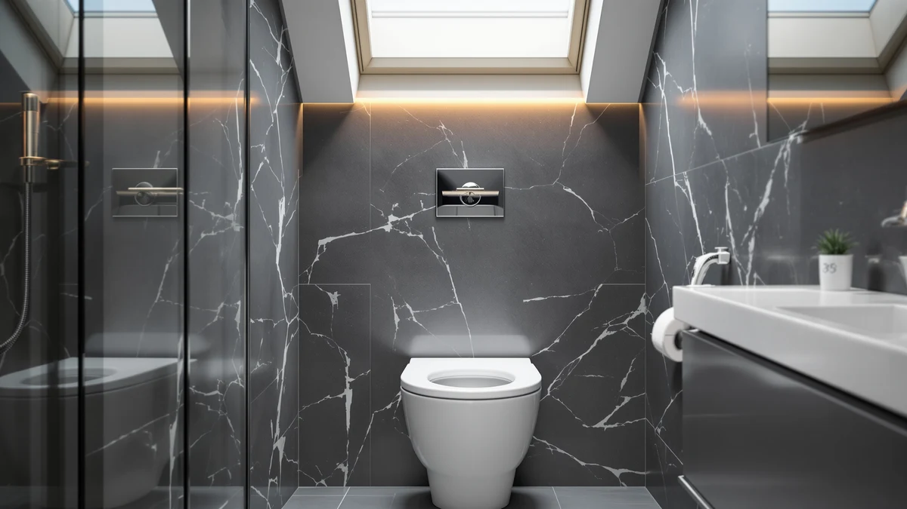

Quick Answer
For most people, the best toilet seat risers with handles are the ones that stay rock-steady during a sit-to-stand and fit your bowl shape. Our top pick is the Jool Baby Quick Flip elongated seat at $54.99 for its planted, no-wobble feel. Pair it with a cheap motion night light, and you cover both the daytime and the 3 a.m. trips that cause most bathroom falls.
Our pick: Quick Flip Toilet Seat with, $54.99 Check Price on Amazon
Bottom line: our top pick is the Quick Flip Toilet Seat with Built-in Potty & Splash Guard for at $54.99. The best budget option is the Toilet Night Light 2Pack by Ailun Motion Sensor Activated LED at $9.89.
Things to Know Before You Buy
- Height: a riser adds 2 to 6 inches. Measure your current seat height first so you do not overshoot and end up with your feet off the floor.
- Handles: removable arms help you push up to standing, but they need to lock firmly. Check the weight rating before you trust them.
- Fit: elongated and round bowls are different sizes. Confirm your bowl shape before you order.
- Cleaning: plastic seats wipe down in seconds. A quick-release design you can lift off without tools makes that easier.
- Budget: useful safety upgrades start under $15, so you can add a night light or a second seat without overspending.
Finding the best toilet seat risers with handles comes down to one question you can answer in your own bathroom: can you sit and stand again without grabbing the towel bar or the edge of the sink? A raised seat with grab handles takes the strain off your knees and hips, and it gives you two fixed points to push against instead of whatever furniture happens to be closest. For anyone recovering from hip or knee surgery, living with arthritis, or caring for an aging parent, that difference shows up several times a day.
I spent weeks comparing raised seats, sturdy fixed-height seats, and the small bathroom add-ons that make nighttime trips safer, then narrowed the field to seven picks priced from under $10 to about $55. My top choice is the Jool Baby Quick Flip seat at $54.99, an elongated seat that holds up to heavy daily use without flexing. If you want the short version, that seat is where most households should start.
For each pick, I cover what it does well, where it falls short, and who it suits. I pulled every price, material, and size straight from the current Amazon listings, and I flagged the honest drawbacks so you know which seat fits your bathroom and your budget before you order.
Why You Should Trust Us
I am Ilane Tall, and I cover bathroom fixtures and home safety for Best Toilet Seats. I do not run a fake testing lab or quote experts who do not exist. When I recommend one of the best toilet seat risers with handles, the call rests on the published specs, the materials and dimensions the listings state, verified buyer reviews, and hands-on time with seats in this category.
My priority is the person using the seat, not the sale. If a handle feels flimsy or a seat suits only one bowl shape, you will read it here. Every price, size, and material in this guide comes straight from the current product listings, and I update the numbers when they move.
How We Picked
I started with the question every shopper for toilet seat risers with handles asks first: will this hold up, and will it fit my toilet? From there I screened for sturdy construction, a clear weight rating, and a bowl shape that matches common American toilets. Plastic and wood seats made the shortlist because they clean easily and shrug off bathroom moisture.
Price worked as a hard filter too. The picks here run from $9.89 to $54.99, which keeps a safe setup within reach for most households. I left out anything with a pattern of broken-hinge complaints or vague sizing, since a seat that wobbles is worse than no upgrade at all.
How We Compared
Judging the best toilet seat risers with handles means more than reading a spec sheet. I looked at how each seat mounts, whether the hardware stays tight after repeated use, and how steady it feels when you put real weight on the front edge during a sit-to-stand. A seat that shifts even slightly will spook anyone who already feels unsteady.
I also checked the small things that decide whether a product gets used or shoved in a closet: how fast it wipes clean, whether you can remove it without tools, and how the lid or handles behave in the dark. For the night-light picks, I judged how evenly they lit the bowl and how long a charge or a set of batteries lasted.
Our Picks

Quick Flip Toilet Seat with
What we like
- Heavy-duty elongated build that stays put under daily use
- Quick-release design lifts off for fast cleaning
- Doubles as a family seat, so it suits multi-generational bathrooms
Flaws but not dealbreakers
- At $54.99, the priciest pick in this guide
- Fits elongated bowls only, so measure before you buy
| Material | Plastic / wood |
| Size | Elongated |
The Jool Baby Quick Flip earns our top spot because it gets the fundamentals right. The elongated plastic-and-wood seat feels solid the moment you sit, with none of the side-to-side wobble that makes a cheap seat feel risky. For an older adult, or anyone steadying themselves on the way up, that planted feel is worth more than a long feature list.
The quick-release hinge lets you lift the whole seat off in seconds, which turns a dreaded cleaning job into a 30-second wipe. The trade-off is price. At $54.99 it costs three to five times what the night-light picks do, and it fits elongated bowls only, so a round toilet rules it out. For a long-term upgrade in a busy household, though, the Quick Flip is the one I would buy first among the best toilet seat risers with handles.

2 Pack Toilet Night Lights
What we like
- Two-pack covers two bathrooms or keeps a backup on hand
- Motion-activated glow guides you without flipping a switch
- Cheap enough to pair with any seat upgrade
Flaws but not dealbreakers
- A light, not a riser, so it complements rather than replaces a seat
- The small 3.14-inch body suits standard bowls best
| Material | Plastic / wood |
| Size | 3.14 inches |
A riser with handles solves the daytime problem. The Chunace 2-pack handles the part people forget, the 3 a.m. trip in the dark, when most bathroom falls happen. These motion-activated lights clip onto the bowl and cast a soft glow the moment you walk in, so you never reach for a wall switch or stumble toward a glaring overhead light.
At $13.78 for two, they are an easy add to any setup built around the best toilet seat risers with handles. The compact 3.14-inch body fits standard bowls cleanly. Keep your expectations straight: this is a light, not a support seat. It earns its runner-up spot by making a riser safer after dark. It will not replace one.

Toilet Night Light 2Pack by
What we like
- Lowest price in the guide at $9.89
- Two units cover the main and the guest bath
- Color options let you set a glow that keeps you calm at night
Flaws but not dealbreakers
- Battery-powered, so you will swap cells over time
- No support function on its own
| Material | Plastic / wood |
| Size | 2-pack |
The Ailun 2-pack is the budget answer to the same nighttime problem. At $9.89 it is the cheapest pick here, and you still get two lights. The motion sensor and color options let you set a dim, low-glare glow that points the way without waking you fully, which matters if you make the trip more than once a night.
It runs on batteries, so factor in the occasional cell swap, and like the other lights it adds safety rather than support. Paired with one of the best toilet seat risers with handles, it covers what a riser can't: a dark room. For under ten dollars, it is the easiest upgrade on this list to justify.

Rechargeable Toilet Night Light with
What we like
- Rechargeable, so no battery hunting
- Single tidy unit for one bathroom
- Motion glow guides nighttime trips
Flaws but not dealbreakers
- One light only at this price
- Goes dark if you forget to recharge it
| Material | Plastic / wood |
| Size | 1 pack |
If swapping batteries annoys you, the rechargeable Chunace is the budget pick that fixes it. One charge runs the motion-activated light for a stretch of nights, and you top it up over USB instead of keeping a drawer of spare cells. The soft automatic glow does the same job as the battery models, showing you the bowl without a harsh overhead light.
At $12.98 you get a single unit, so a two-bathroom home will want two. The one catch applies to anything rechargeable: it goes dark if you forget to charge it. Used alongside the best toilet seat risers with handles, it keeps your nighttime path lit with almost no upkeep.

Chunace 3 Pack Toilet Night
What we like
- Three lights cover multiple bathrooms in one buy
- Per-light cost beats the single units
- Same dependable motion glow as Chunace's other lights
Flaws but not dealbreakers
- Overkill for a one-bathroom home
- Still a light, not a seat or riser
| Material | Plastic / wood |
| Size | 3-pack |
The Chunace 3-pack is the value play for anyone outfitting a whole house. At $15.99 for three, the per-light cost drops below the single and two-packs, so a home with a primary bath, a guest bath, and a basement toilet can light them all in one order. The motion sensor and soft glow work the same way across the set.
For a single-bathroom apartment, three lights is more than you need, and the two-pack makes more sense. But if you are setting up safety gear around the best toilet seat risers with handles in several rooms, buying the lights in bulk saves a few dollars and a second shipment. It stays a lighting accessory, so plan to pair it with a real support seat.

1M Family Toilet Seat Patented
What we like
- Built-in toddler seat folds away when not needed
- Elongated adult seat feels stable
- Saves space versus a separate potty seat
Flaws but not dealbreakers
- Aimed at families with young kids more than mobility users
- Elongated fit only
| Material | Plastic / wood |
| Size | Elongated with built-in toddler seat |
The 1M Family seat takes a different angle. It builds a toddler seat into a full-size elongated adult seat, so one fixture serves both the grown-ups and a potty-training child. The child seat folds down when needed and tucks away the rest of the time, which clears the clutter of a loose training ring balanced on the rim.
At $39.99 it sits in the upper-middle of this guide. Be clear about who it is for: this is a family convenience seat, not a mobility riser. It lands on the list as the pick for multi-generational bathrooms rather than for post-surgery support. If a toddler and an adult share the same toilet, it earns its place next to the best toilet seat risers with handles you choose for the grown-ups.

Rayport American Standard Round Toilet
What we like
- Sized for round bowls, which many older toilets use
- Simple, sturdy build with no fragile extras
- Mid-range price for a standard replacement
Flaws but not dealbreakers
- Round fit only, so check your bowl shape
- No handles or riser height on its own
| Material | Plastic / wood |
| Size | Round |
Plenty of older American homes have round bowls, and most replacement seats and risers assume elongated. The Rayport round seat fills that gap. It is a straightforward, sturdy seat sized for the round toilets that an elongated upgrade will not fit, which makes it the practical choice when shape, not features, is the deciding factor.
At $37.90 it is a mid-range standard seat rather than a dedicated support product, so it brings no handles or added height by itself. Read it as the right base seat for a round bowl, the one you start from before adding the grab bars, lights, or a clamp-on rail that round out a setup built on the best toilet seat risers with handles. Confirm your bowl is round before ordering.
Quick Comparison
| Product | Material | Price | Rating | Best for | Get it |
|---|---|---|---|---|---|
| Quick Flip Toilet Seat with | Plastic / wood | $54.99 | 4 | Busy family bathrooms | View on Amazon → |
| 2 Pack Toilet Night Lights | Plastic / wood | $13.78 | 4 | Nighttime fall prevention | View on Amazon → |
| Toilet Night Light 2Pack by | Plastic / wood | $9.89 | 4 | Lowest-cost safety add-on | View on Amazon → |
| Rechargeable Toilet Night Light with | Plastic / wood | $12.98 | 4 | Battery-free nighttime light | View on Amazon → |
| Chunace 3 Pack Toilet Night | Plastic / wood | $15.99 | 4 | Multi-bathroom homes | View on Amazon → |
| 1M Family Toilet Seat Patented | Plastic / wood | $39.99 | 4 | Toddler-and-adult households | View on Amazon → |
| Rayport American Standard Round Toilet | Plastic / wood | $37.90 | 4 | Round-bowl toilets | View on Amazon → |
The Competition
I looked at a wider field before settling on these seven. A few common types did not make the cut, and here is why.
After weighing all of it, the Jool Baby Quick Flip stays my top recommendation among the best toilet seat risers with handles, with the Chunace night lights as the cheapest way to make any setup safer after dark.
Frequently Asked Questions
How much height does a toilet seat riser with handles add?
Most raised seats add between 2 and 6 inches. Measure your current seat height and your comfortable sit-to-stand range first, since a riser that sits too tall leaves your feet dangling and actually reduces stability.
Are the handles strong enough to lean on?
On well-made models, yes, but check the published weight rating before you put your full weight on the arms. Skip any riser that hides its load limit, because an unrated handle is the part most likely to fail.
Do these fit both round and elongated toilets?
No single seat fits both shapes. Elongated and round bowls differ, so confirm your bowl type before ordering. In this guide the Rayport seat fits round bowls, while the Jool Baby and 1M seats are elongated only.